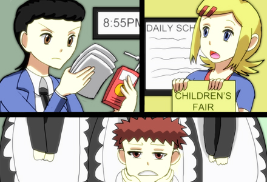

Welcome! You have visited Lock-On: Homes, a web comic about The basic 10 laws of the Child Rights.
For more information go to our twitter page and facebook and gives us feedback!
LOCK-ON: HOMES
ABOUT
A child has the right to:
- to be born & to be raised by parents
- be healthy & educated
- be protected against all form of abuse
- get protection from the government
- gain freedom and responsibility
Responsibilities of the Child:
- Respect, obey, & love the family
- Get education & participate in social activities
- Observe Human Rights
- Serve and Love the Country
The Parent and the Child
The relationship between the parent and the child altogether is the most important thing in the family. Because how a child acts outside their comfort zone will also reflect on the parent's personality. The child, especially in early ages in life, will try to imitate on what the parent is doing inside the home. The value of the parent will also influence the child since that was the way they were raised. The parents have to be careful on what they do and tell their kids, especially in the early stage, what is right and what is wrong as soon as possible.
The Parent
Parents are composed of two people: The Father and the Mother.
Traditional Way:
The role of the Father is that he is the head of the family. He goes to work everyday in order to provide his family the basic needs: Food, Shelter, Water, and Clothing. He only spends his time with his family in the weekends.
The role of the Mother is that she always stays at home to take care of the house. She spends all the time cooking, cleaning, and raising the child. She always has time to be with her child when the child doesn't have school.
New Modern Way:

Both the Father and the Mother work to provide the family with the basic needs: Food, Shelter, Water, and Clothing. So the parents have no choice but to hire a maid, or yaya, to raise the child. Sometimes their roles are interchangeable these days, the Father stays at home to raise the child and the Mother goes to work instead.
The Child
A child is a person who is at the below age of 18 years old and below. They are fragile and easily get hurt. The child is completely dependent in life and seeks full guidance in adults, most particularly the parents. In the early stage of their lives, everything they will see in their surroundings is considered 'right'. They will imitate everything they see, copy on what is seen in television and magazine covers. Because the child doesn't know what is right and wrong yet, so the job of the parents have a major role in the child's development.
Discipline vs. Abuse
Discipline
is an act to teach, behave and show children what are the rights and the wrong done by the child. Using of calm talking with minor actions. So in the end, the child will understand the situation without getting hurt physically and emotionally.
Effect: A Child who is well disciplined is Pampered and gain self-confidence. The child will have a positive way in life no matter what situation the child is in. The child can interact with other people easily.
Abuse however, is the contrary way. This is more the aggressive way of behaving a child. Using verbal words mixed with shouting and swearing that the child doesn't even understand, added by the slaps in any part of the child's body then leaves a mark. This kind of way injures the child physically and emotionally.
Effect: The child will view the world as a terrible place. The abuse during their childhood will traumatize them from trying out new things.
Discipline Strategies
The Parent should first consider thinking before acting. Parents needs to observe their surroundings first, and where they are and how is the child behaving. Think carefully of a punishment for the child to deal with without any injuries. The child has the right to complain of course but they have to abide by the parents' rules. And by the right age, the parent can trust the child in reflecting his/her own actions.
CHILD RIGHTS
CHILD RIGHTS The complete official text
THIS DECLARATION OF THE RIGHTS OF THE CHILD to the end that he may have a happy childhood and enjoy for his own good and for the good of society the rights and freedoms herein set forth, and calls upon parents, upon men and women as individuals, and upon voluntary organizations, local authorities and national Governments to recognize these rights and strive for their observance by legislative and other measures progressively taken in accordance with the following principles:
1. The child shall enjoy all the rights set forth in this Declaration. Every child, without any exception whatsoever, shall be entitled to these rights, without distinction or discrimination on account of race, colour, sex, language, religion, political or other opinion, national or social origin, property, birth or other status, whether of himself or of his family.
2. The child shall enjoy special protection, and shall be given opportunities and facilities, by law and by other means, to enable him to develop physically, mentally, morally, spiritually and socially in a healthy and normal manner and in conditions of freedom and dignity. In the enactment of laws for this purpose, the best interests of the child shall be the paramount consideration.
3. The child shall be entitled from his birth to a name and a nationality.
4. The child shall enjoy the benefits of social security. He shall be entitled to grow and develop in health; to this end, special care and protection shall be provided both to him and to his mother, including adequate pre-natal and post-natal care. The child shall have the right to adequate nutrition, housing, recreation and medical services.
5. The child who is physically, mentally or socially handicapped shall be given the special treatment, education and care required by his particular condition.
6. The child, for the full and harmonious development of his personality, needs love and understanding. He shall, wherever possible, grow up in the care and under the responsibility of his parents, and, in any case, in an atmosphere of affection and of moral and material security; a child of tender years shall not, save in exceptional circumstances, be separated from his mother. Society and the public authorities shall have the duty to extend particular care to children without a family and to those without adequate means of support. Payment of State and other assistance towards the maintenance of children of large families is desirable.
7. The child is entitled to receive education, which shall be free and compulsory, at least in the elementary stages. He shall be given an education which will promote his general culture and enable him, on a basis of equal opportunity, to develop his abilities, his individual judgement, and his sense of moral and social responsibility, and to become a useful member of society.
The best interests of the child shall be the guiding principle of those responsible for his education and guidance; that responsibility lies in the first place with his parents.
The child shall have full opportunity for play and recreation, which should be directed to the same purposes as education; society and the public authorities shall endeavour to promote the enjoyment of this right.
8. The child shall in all circumstances be among the first to receive protection and relief.
9. The child shall be protected against all forms of neglect, cruelty and exploitation. He shall not be the subject of traffic, in any form.
The child shall not be admitted to employment before an appropriate minimum age; he shall in no case be caused or permitted to engage in any occupation or employment which would prejudice his health or education, or interfere with his physical, mental or moral development.
10. The child shall not be admitted to employment before an appropriate minimum age; he shall in no case be caused or permitted to engage in any occupation or employment which would prejudice his health or education, or interfere with his physical, mental or moral development.
COMIC
Welcome to the comic section. Start reading Chapter One now, enjoy!
CHARACTERS
Children
Catherine:
- Straight A student who tried to committed suicide
- has an adopted father who's working abroad in Saudi but was killed in an accident related to his job.
- Adopted mother went into depression, after the husband died, had to be admitted in a mental institution
Parents
CHAPTER ONE:
CHILDREN'S STORIES


CHAPTER TWO:
BIGGEST DREAMER
CHAPTER THREE:
HELLO DAUGHTER
CHAPTER FOUR:
DIFFERENT SON

CHAPTER FIVE:
NICE MEETING YOU

CHAPTER SIX:
CAMPSTORY'S END
Go back to previous chapter
You have reached the end of the comic. Thank you for reading!
CONTACT US
Want to seek professional help? Want to report about a child? Go to any of these official child-helping organizations:
Give us feedback on what we could improve on!